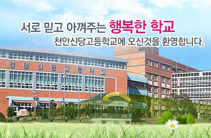

안녕하세요 천안신당고 메인홈페이지에 오신것을 환영합니다.
- 컴퓨터공학과
- 웹프로그래머
- 천안신당고등학교
- 2-10
천안신당고 사진

- 2003년 8월 25일 : 천안신당고등학교 설립 인가(30학급
- 2006년 3월 1일 : 제1대 안창모 교장 취임
- 2006년 3월 3일 : 2006학년도 입학식(12학급 444명)
- 2006년 5월 23일 : 개교 기념식
- 2006년 10월 26일 ~ 10월 27일 : 제1회 청솔축제
- 2009년 2월 12일 : 제1회 졸업식(12학급 424명)
- 2010년 9월 13일 : 다목적 강당 꿈마루 개관
- 2019년 3월 4일 : 제14회 입학식(10학급 246명)
- 2019년 9월 1일 : 제7대 김종하 교장 부임
- 2020년 2월 5일 : 제12회 졸업식(9학급 227명, 누계 4,705명)
천안 신당고등학교는 2반의 과중반을 지니고 있습니다.
과학중점반은 2학년 9반과 2학년 10반이 있습니다.